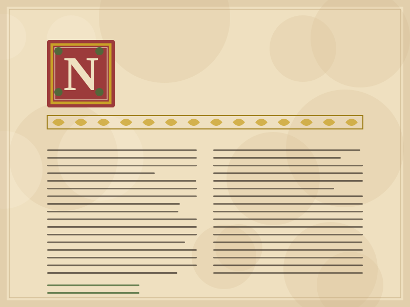
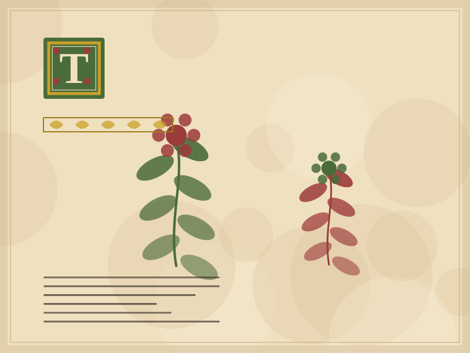

ms. 001 · 12th century
Teaching prototype · Sample data · Humanities Informatics
Codices is a small-scale digital library that gathers six illuminated manuscripts. Each item is accompanied by a catalogue record of normalised metadata, a transcription in TEI format and a high-resolution image published according to the IIIF standard.
A deliberately modest scale: the objective is not quantity, but the quality of the description and its sustainability over time.
Three items chosen from those with the most complete documentation.
ms. 001 · 12th century

ms. 002 · 14th century

ms. 003 · 15th century
Four phases, each with a verifiable output. Each phase is described in the Method.
On-site inspection, measurements, condition report. It produces the paper survey record.
Capture at 600 dpi, ICC colour profile, TIFF format as master. It produces the preservation archive.
Metadata in Dublin Core, transcription in TEI P5, alignment with controlled vocabularies.
Export to HTML5 and IIIF, accessibility check, going live and monitoring.
“A digital library is not a collection of files, but a set of relationships described in such a way that a machine can process them and a person can understand them.” — Guiding principle of the Codices project
Every technical choice answers to an international recommendation, so that the data remain reusable even when this site no longer exists.
Fifteen basic descriptive elements (title, creator, date, type, rights…) for the record of each manuscript. It is the minimum standard for interoperability between digital libraries.
Text Encoding Initiative: the XML schema used to encode the transcriptions, distinguishing spelling, expanded abbreviations and editorial interventions.
International Image Interoperability Framework: it exposes the images through predictable URLs, allowing comparison between items held in different institutions.
Guidelines for the accessibility of web content. The site uses semantic HTML, verified contrast ratios, keyboard navigation and respect for system preferences.
The six items described in this prototype are sample records, built on real models of Italian illuminated manuscripts but not corresponding to shelfmarks held at any specific institution. The metadata structure, the controlled vocabularies and the export formats, on the other hand, are real and applicable to an authentic collection.